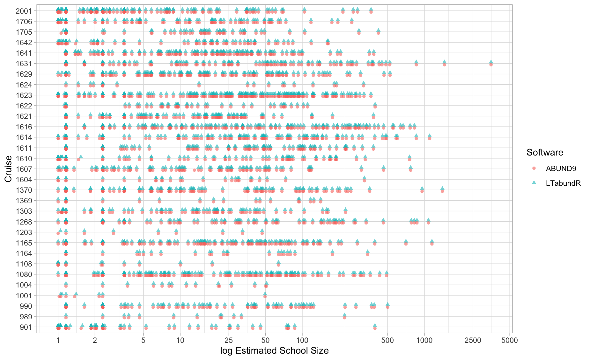

9 Estimating g(0)
The parameter g(0), the probability of detecting a species on the trackline (perpendicular distance = 0 km), is important in line transect analysis. When a detection function is fit to the sightings data, the assumption is that all animals on the trackline are detected; none is missed. In practice, this is rarely the case, particularly for marine mammals who spend time away from the surface and are cryptic in various other ways. Moreover, the chance of missing an animal on the trackline increases as sighings conditions deteriorate. To account for this, g(0) can be estimated and used to scale the effective strip half-width that is estimated using the detection function.
Estimating g(0) for a survey generally involves four steps:
First, you estimate
g(0)in perfect conditions (i.e., Beaufort sea state 0).Second, you scale that estimate downward to approximate
g(0)when conditions are less than ideal (i.e., a separateg(0)estimate for each Beaufort sea state from 1 to 6). This is known as the relative trackline probability, or relative g(0).Third, you determine the weighted average value of
g(0)for your particular survey, based on the proportional distribution of effort in each sea state. You pass this single value to your line-transect analysis functions.Fourth, you need to determine the CV of your weighted estimate of
g(0). This isn’t straightforward; to do this, you need to simulate a new distribution for the weightedg(0), from which you then estimate the CV.
The first of these steps is typically the biggest lift analytically, and very few studies provide absolute estimates of g(0) for their species of interest. Instead, most studies assume that the absolute g(0) is in fact 1.0, and proceed directly to the second step – relative trackline probability – is more common because it can be estimated directly from the survey data, thanks to an approached developed in Barlow (2015), “Inferring trackline detection probabilities, g(0), for cetaceans from apparent densities in different survey conditions” (Marine Mammal Science). For this reason, relative g(0) is typically used to generate the weighted average g(0) for each species within a survey.
Relative g(0)
Barlow (2015) estimates Rg(0) – relative trackline detection probability – for various Pacific cetaceans based on all available NOAA-NMFS cruise data, 1986-2010, from the Central North Pacific, Eastern Tropical Pacific, and California Current. For his analysis, he used 10-km segments of survey data. We will mirror his analysis using the same regions, same segment length, and all surveys from 1986 through 2020. This is provided as built-in processed datasets within LTabundR …
… which we can combine using the function cruz_combine():
First, we will combine these datasets together; to do so, we need to make sure that segment IDs are not accidentally replicated in the two datasets:
We then estimate Rg(0) for each Beaufort sea state using the function g0_bft_model(). We do this one species at a time. For example, the code for striped dolphin (Stenella coeruleoalba) is as follows:
g0_result <-
g0_bft_model(
spp = '013',
truncation_distance = 5.5,
cruz,
pool_bft = NULL,
jacknife_fraction = .1)
)The input pool_bft provides a way to specify that low Beaufort sea states, which are typically rare in open-ocean surveys, should be pooled. This step may be needed in order to achieve a monotonic decline in the g(0) ~ Bft relationship, but the default is NULL, i.e., no pooling. If pool_bft is the character string "01", Beaufort states 1 will be pooled into state 0. If pool_bft is the character string "012", Beaufort states 1 and 2 will be pooled into state 0. We recommend beginning with NULL then modifying this if needed, based on the output.
The jacknife_fraction input indicates that standard error and CV will be estimated using an iterative jackknife procedure in which 10% of the data is removed in each iteration. Find more details on this process using the function documentation, ?g0_bft_model().
This function returns various details:
g0_result
spp bft Rg0 ESW n Rg0_SE Rg0_CV ESW_SE
1 013 0 1.0000000 3.980604 10 0.00000000 0.00000000 0.13445008
2 013 1 0.7010900 3.720670 10 0.01529890 0.02182160 0.10292339
3 013 2 0.4915271 3.436860 10 0.02150545 0.04375231 0.06444672
4 013 3 0.3446048 3.137943 10 0.02267348 0.06579562 0.02858447
5 013 4 0.2415989 2.838135 10 0.02124985 0.08795508 0.04431206
6 013 5 0.1693826 2.549622 10 0.01867176 0.11023424 0.08329333
7 013 6 0.1187524 2.282998 10 0.01575093 0.13263672 0.11719846The most important of these is Rg0, the estimate of the relative trackline detection probability in each Beaufort sea state (relative to Bft = 0), and Rg0_CV, the CV of those estimates.
To produce these estimates efficiently for many species, you can wrap the code above in a for loop that references a data.frame specifying the species codes, truncation distances, and pooling parameters for each species. The example below uses a GoogleSheet to prepare that data.frame.
# Load species settings
url <- 'https://docs.google.com/spreadsheets/d/1mzyGb2qMUkpXb2ChglVMx9ZXRaGpjq0C2-Xzlj6uYvg/edit?usp=sharing'
(df <- gsheet2tbl(url) %>% as.data.frame)
# Loop through each species
result <- data.frame()
i=24
for(i in 1:nrow(df)){
(spp_title <- df$title[i])
(sppi <- df$species[i])
(sppi <- str_split(sppi,',')[[1]])
(sppi <- gsub(' ','',sppi))
(sppi <- str_pad(sppi, width=3, side='left', pad='0'))
(tdi <- df$truncation[i] %>% as.numeric)
(pooli <- df$pooling[i])
if(pooli == '1'){pooli <- '01'}
if(pooli == '12'){pooli <- '012'}
if(pooli == 'none'){pooli <- NULL}
pooli
# Carry out Rg0 estimation
rg0_sp <- g0_bft_model(spp = sppi,
truncation_distance = tdi,
cruz = cruz,
pool_bft = pooli,
#jacknife_fraction = NULL)
jacknife_fraction = .1)
# Summarize sample sizes
(summi <- rg0_sp$summary)
# Review
resulti <- data.frame(title = spp_title, spp = paste(sppi, collapse='-'), summi)
resulti
# Update results
result <- rbind(result, resulti)
saveRDS(result, file='g0_results.RData')
}This code (which takes about 8 hours to run on my machine) produces results that we can plot easily.
First we load the result of this analysis, which is provided as a built-in dataset in LTabundR:
Then we group similar species together, to make plots more intelligible:
titles <- g0_result$title %>% unique
g0_result$Group <- 3
g0_result$Group[g0_result$title %in% titles[c(14:19)]] <- 2
g0_result$Group[g0_result$title %in% titles[c(1:9)]] <- 1Relative g(0) for dolphins …
ggplot(g0_result %>%
filter(Group == 1) %>%
mutate(Species = title), aes(x=bft, y=Rg0, color=Species)) +
geom_line() + geom_point(size=.5) +
theme_light() + scale_x_continuous(breaks=0:6) +
xlab('Beaufort Sea State') + ylab('Relative g(0)')
… for cryptic species …

… and for conspicuous whales:
Weighted average g(0)
Since g(0) depends upon survey conditions, and since each survey occurs in different conditions, a unique g(0) value must be estimated for each species in each survey (or combination of surveys).
Let’s say we want to estimate the g(0) for striped dolphins during the WHICEAS 2020 surveys:
To view the distribution of effort in this survey across sea states, we can use the function summarize_bft():
summarize_bft(cruz)$overall
# A tibble: 6 × 3
bftr km prop
<dbl> <dbl> <dbl>
1 1 60.1 0.0112
2 2 212. 0.0397
3 3 507. 0.0949
4 4 1475. 0.276
5 5 2079. 0.389
6 6 1012. 0.189 Then we grab the Rg(0) results for a species of interest, such as the striped dolphin:
striped_dolphin <- g0_result %>% dplyr::filter(spp == '013')
(Rg0 <- striped_dolphin$Rg0)
1 2 3 4 5 6 7
1.0000000 0.7010900 0.4915271 0.3446048 0.2415989 0.1693826 0.1187524
(Rg0_cv <- striped_dolphin$Rg0_CV)
[1] 0.00000000 0.02182160 0.04375231 0.06579562 0.08795508 0.11023424 0.13263672We then use the function g0_weighted_var() to compute the weighted Rg(0) for our survey as well as its CV. Computing the former is done automatically within the function, but estimating the latter (the CV) requires some manual steps. For that reason, this function will launch a Shiny app that guides the user the process (not run here):
See ?g0_weighted_var() for further details.
Since this function requires a manual step, this has to be run separately for each species of interest in your survey.